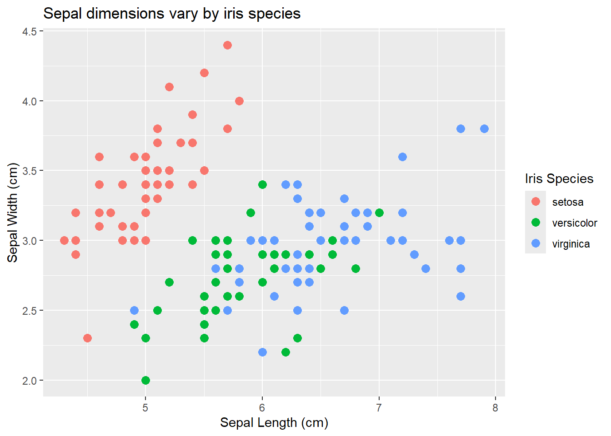

*Note that you can click the three-line (hamburger) icon on the bottom-left of the slides to access a navigation menu. You can click inside the slides region and press the left and right arrow keys on your keyboard to advance and reverse the slides and animations.
Practice
1) Code Style
The following code works, but it violates several principles of the tidyverse style guide. Using consistent code style makes collaboration easier and smoother. Rewrite this code to improve its style.
Use a consistent snake case style for the object name.
Put spaces around the relational operators, arithmetic operators, and after commas.
Follow each pipe with a line break and indent appropriately.
Create a new code chunk that generates a simple plot (e.g., plot(1:10)). Use hash pipes (#|) to configure the chunk options. You can combine multiple options by putting each on a new line.
Give the chunk a unique label called simple-plot.
Run the code without showing it in the final document.
Prevent any messages or warnings from rendering.
Add a figure caption that reads “A simple plot of numbers.”.
Answer key
#| label: simple-plot#| echo: false#| message: false#| warning: false#| fig-cap: "A simple plot of numbers."plot(1:10)
[06b] Table Anatomy / Table Styling
Topics
Understand the structural anatomy of a gt table
Format and style table data for clear communication
*Note that you can click the three-line (hamburger) icon on the bottom-left of the slides to access a navigation menu. You can click inside the slides region and press the left and right arrow keys on your keyboard to advance and reverse the slides and animations.
Practice
1) Table Structure
Using the msleep dataset (from the {ggplot2} package), create a base display table using the gt package.
First, filter the data to only include animals where the vore is “carni”, and select the name, sleep_total, and sleep_rem columns.
Pass this data to gt() to create the base table.
Use tab_header() to add a title (“Carnivore Sleep Patterns”) and a subtitle (“Total and REM sleep”).
Use cols_label() to rename the columns to “Animal”, “Total Sleep”, and “REM Sleep”.
*Note that you can click the three-line (hamburger) icon on the bottom-left of the slides to access a navigation menu. You can click inside the slides region and press the left and right arrow keys on your keyboard to advance and reverse the slides and animations.
Practice
1) Customizing Labels
Create a scatterplot using the iris dataset (from the {datasets} package).
Map Sepal Length (Sepal.Length) to the x-axis and Sepal Width (Sepal.Width) to the y-axis.
Map Species (Species) to the color aesthetic.
Use labs() to add a clear title, x-axis label, y-axis label, and legend title.
Answer key
library(tidyverse)iris |>ggplot(aes(x = Sepal.Length, y = Sepal.Width, color = Species)) +geom_point(size =3) +labs(title ="Sepal dimensions vary by iris species",x ="Sepal Length (cm)",y ="Sepal Width (cm)",color ="Iris Species" )

2) Customizing Scales
Modify your plot from question 1 to customize its scales.
Use scale_y_continuous() to set the limits from 2 to 5, and add breaks every 0.5 units.
Use scale_color_manual() to assign specific colors (“darkorange”, “purple”, and “cyan4”) to the three iris species.
Answer key
iris |>ggplot(aes(x = Sepal.Length, y = Sepal.Width, color = Species)) +geom_point(size =3) +labs(title ="Sepal dimensions vary by iris species",x ="Sepal Length (cm)",y ="Sepal Width (cm)",color ="Iris Species" ) +scale_y_continuous(limits =c(2, 5),breaks =seq(2, 5, by =0.5) ) +scale_color_manual(values =c("setosa"="darkorange","versicolor"="purple","virginica"="cyan4" ) )